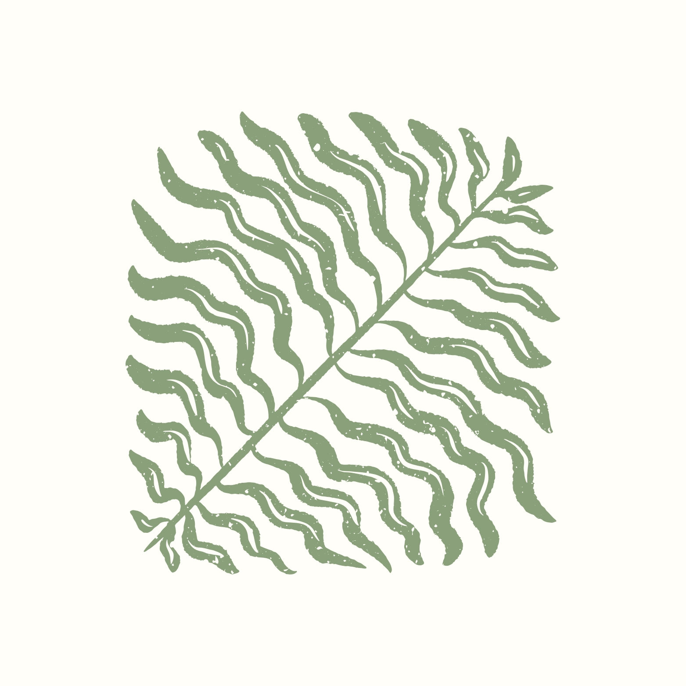

Tas Anyaman Mba Ratna

Tas Anyaman Mba Ratna offers the best quality and attractive craft bags to all customers. Search and find the bag of your choice!
Explore Our CollectionTas Anyaman Mba’ Ratna was founded in 2020 by Dwi Ratnasari. The mission is to preserve and promote traditional, simple weaving techniques that have been passed down from generation to generation.
The woven bags produced are carefully made using traditional weaving methods. This can preserve traditional skills passed down and will continue to develop in the modern world. Working directly with local craftsmen as a sustainable livelihood by providing decent wages as a form of appreciation for the extraordinary artistic talents of the craftsmen.
Our commitment to quality, authenticity, and sustainability enables these woven bag MSMEs to generate trust and customer satisfaction. Currently buying our woven bag catalogs, you are not only buying traditional goods from beautiful hands but also supporting the preservation of sustainable traditional culture and handicrafts.


"The quality of the handwoven basket I ordered exceeded my expectations. The craftsmanship is exquisite, and it's obvious that each piece is made with care and attention to detail. I'll definitely be ordering more items from Tas Anyaman Mba Ratna!"
Interior Designer
Avoid washing woven bags directly with water...
For bags that develop an unpleasant smell after storage...
Water is the enemy of woven materials...
Check your woven bag routinely for signs of damage...
Front of KUD Sri Among Tani, No. 97
Brenggolo, Plosoklaten, Kediri Regency
East Java 64175
(62) 856-0898-0005
@tas_anyaman Mba ratna
@mba_ratna's_woven_bag
Monday - Friday: 9am - 5pm
Saturday: 10am - 4pm
Sunday: Closed